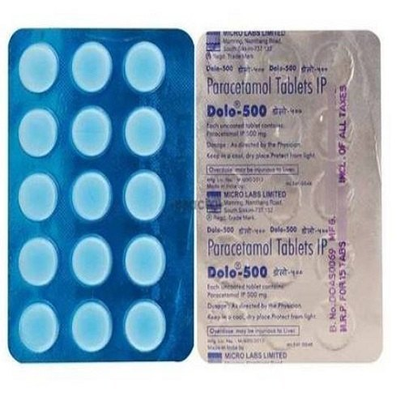

₹30.07
PACK SIZE
Dolo 650
Manufactured By Micro Labs LTD.
Contains Paracetamol
Description
Dolo-650 Tablet is the most widely used over-the-counter (OTC) medication. It is used for the treatment of fever. It also provides relief from headache, toothache, backache, nerve pain, musculoskeletal pain, etc. associated with/without fever. Dolo-650 Tablet works by decreasing the intensity of pain signals to the brain. It also prevents the release of prostaglandins, the chemical that causes pain and an increase in body temperature.
Dolo-650 Tablet is safe to use within the recommended dosage. However, in some cases, you may experience side effects such as nausea, vomiting, indigestion, diarrhoea, stomach pain, etc. Consult your doctor if these symptoms stay for a long time or if they become severe.
Dolo-650 Tablet can be taken with or without food. If your doctor has prescribed this medicine, take it for the recommended duration. Never take more than the prescribed dose, or for a longer duration.
Dolo-650 Tablet is not recommended if you are allergic to it. Inform your doctor if you have liver or kidney problems before taking this medicine. Though this medicine is safe for use in pregnancy and breastfeeding, it is recommended to consult your doctor before taking it.
Dolo-650 Tablet is safe to use within the recommended dosage. However, in some cases, you may experience side effects such as nausea, vomiting, indigestion, diarrhoea, stomach pain, etc. Consult your doctor if these symptoms stay for a long time or if they become severe.
Dolo-650 Tablet can be taken with or without food. If your doctor has prescribed this medicine, take it for the recommended duration. Never take more than the prescribed dose, or for a longer duration.
Dolo-650 Tablet is not recommended if you are allergic to it. Inform your doctor if you have liver or kidney problems before taking this medicine. Though this medicine is safe for use in pregnancy and breastfeeding, it is recommended to consult your doctor before taking it.
Quick Links
Side-effects
Major & minor side effects for Dolo-650 Tablet
- Nausea and Vomiting
- Stomach pain
- Diarrhoea
- Indigestion
- Skin Rash
Usage Of Dolo-650
What is it prescribed for?
- Fever
Fever is a temporary rise in your body temperature, usually in response to an illness/infection. Fever is not something to worry about unless your body temperature is very high or if it lasts longer. Dolo-650 Tablet is a commonly used medicine to provide relief from - Mild to Moderate pain
Dolo-650 Tablet s used for the treatment of mild to moderate pain, including headache, toothache, backache, muscle pain, joint pain etc. associated with/without
- Post Vaccination Fever
Dolo-650 Tablet is useful for the treatment of fever, pain and swelling at the injection site, and bodyache that may occur after a vaccine has been.
Concerns
Commonly asked questions
How long does it take for this medicine to take effect?
Dolo-650 Tablet shows its effect within 30-60 minutes after administration.
How long do the effects of this medicine last?
The effect of Dolo-650 Tablet lasts for an average duration of 4 to 6 hours after administration.
Is it safe to consume alcohol while taking this medicine?
Consumption of alcohol is not recommended during treatment with Dolo-650 Tablet as it may cause liver damage. Consult your doctor immediately if you experience any signs and symptoms of liver injury like fever, rash, nausea, vomiting, fatigue, dark urine, jaundice, etc.
Is this a habit forming medicine?
No habit-forming tendency has been reported with Dolo-650 Tablet.
Can this medicine be taken during pregnancy?
Dolo-650 Tablet may be used during pregnancy for the shortest time possible and the lowest effective dose. However, it is recommend to use this medicine after consultation with your doctor.
Can this medicine be taken while breast-feeding?
Dolo-650 Tablet is considered safe during breastfeeding. It passes into the breastmilk in very small amounts which are not known to harm your baby. However, it is recommend to use this medicine after consultation with your doctor.
- Allergy
Avoid taking Dolo-650 Tablet if you are allergic to it. Seek immediate medical attention if you notice any symptoms such as skin rash, swelling and/or itching (especially on the face, lips, throat, etc.), dizziness, breathing difficulty, etc. after taking this medicine. - Kidney damage
Analgesic Nephropathy is a condition that causes kidney damage due to the long-term use of pain-relievers. Dolo-650 Tablet is not recommended for use if you have kidney problems associated with excessive use of painkillers. - Severe liver impairment
Dolo-650 Tablet gets converted to its active form in the liver. This medicine is not recommended if you have severe liver problems as it may cause further damage to your liver.
Warnings for special population
- Pregnancy
Dolo-650 Tablet may be used during pregnancy for the shortest time possible and the lowest effective dose. However, it is recommend to use this medicine after consultation with your doctor. - Breast-feeding
Dolo-650 Tablet is considered safe during breastfeeding. It passes into the breastmilk in very small amounts which are not known to harm your baby. However, it is recommend to use this medicine after consultation with your doctor.
Warnings for special population
- Overdose and/or excessive use
Paracetamol poisoning is caused by the excessive use of Dolo-650 Tablet accidentally or intentionally, resulting in liver damage. Use this medicine as advised by your doctor/pharmacist. Seek emergency medical attention if an overdose is suspected. - Chronic malnutrition
Dolo-650 Tablet should be used with extreme caution if you are malnourished (lack of proper nutrition in the body) as it may increase the risk of side effects. Your doctor may recommend dose adjustments based on your body weight. - Kidney Diseases
Dolo-650 Tablet should be used with caution if you have kidney problems as it may increase the risk of side effects. Your doctor may suggest tests to closely monitor your kidney function during treatment with this medicine. - Use in children
Dolo-650 Tablet is not recommended for use in children below 10 years of age.
-
Missed Dose
Dolo-650 Tablet is normally taken on a needed basis. If you miss a scheduled dose take it as soon as possible but do not double the dose to make up for the missed one. -
Overdose
Never take more than the prescribed dose. Seek immediate medical attention in case of an overdose with Dolo-650 Tablet.
This is the third item's accordion body. It is hidden by default, until the collapse plugin adds the appropriate classes that we use to style each element. These classes control the overall appearance, as well as the showing and hiding via CSS transitions. You can modify any of this with custom CSS or overriding our default variables. It's also worth noting that just about any HTML can go within the
.accordion-body, though the transition does limit overflow.
Dolo-650 Tablet can be taken with or without food.
Avoid taking more than the recommended dose or for a longer
Avoid consumption of alcohol while taking this medicine as it may increase the risk of liver damage.
Inform your doctor if you are taking any other paracetamol-containing medicine.
Avoid taking more than the recommended dose or for a longer
Avoid consumption of alcohol while taking this medicine as it may increase the risk of liver damage.
Inform your doctor if you are taking any other paracetamol-containing medicine.